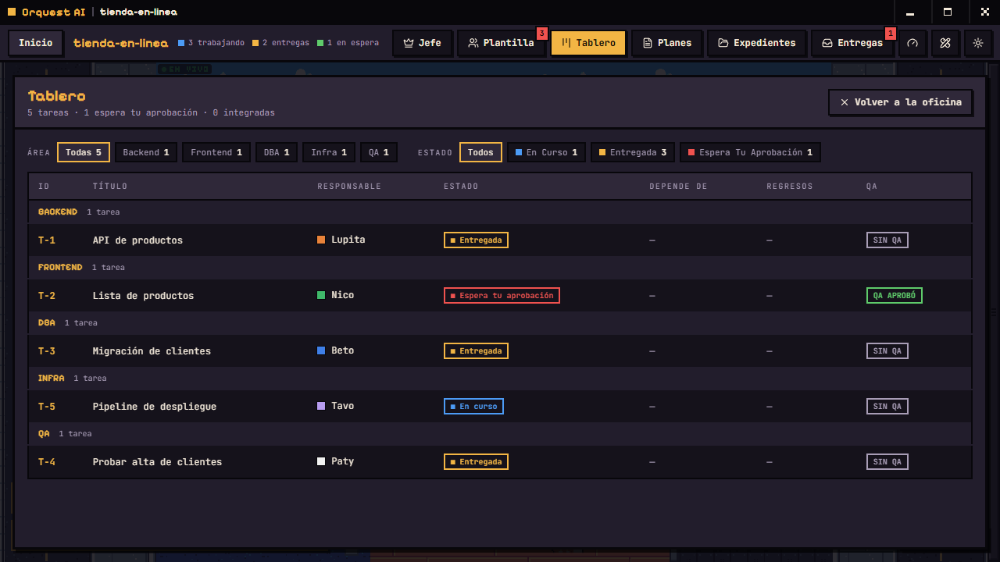

Orquest AI
Tus agentes de código, trabajando en una oficina que puedes ver.
Claude Code, Codex y otras CLIs de IA entran como empleados de un estudio en pixel art. Tú hablas con el jefe; él arma el equipo, reparte el trabajo, revisa lo que entregan y te pide aprobación antes de tocar tu rama.
Cómo funciona
- Contratas al jefe
Eliges qué CLI lo lleva, le pones nombre y le das el objetivo del proyecto.
- Propone la plantilla
Qué puestos hacen falta y con qué proveedor y modelo. Tú apruebas, cambias o quitas.
- Cada quien en su oficina
Cada empleado trabaja en su propia copia del repositorio, así nadie pisa a nadie.
- El jefe revisa, tú integras
Nada llega a tu rama sin que el jefe lo apruebe y tú des el visto bueno.
Qué trae



Permisos por puesto
Cada puesto tiene su manual: qué puede editar y qué comandos corre sin preguntar. Orquest no salta los permisos de ninguna CLI.
Memoria que sobrevive
Cuando a alguien se le llena el contexto escribe su traspaso, descansa y vuelve leyendo su bitácora. Quien ocupe su puesto después también la lee.
Expedientes
Cómo le ha ido a cada proveedor y modelo contigo: entregas integradas a la primera y rechazos. El jefe lo consulta antes de proponer a alguien.
Todo en tu máquina
No hay servidor de Orquest. El tablero vive en una base de datos local y los agentes usan las sesiones que ya tienes en cada CLI.
Con qué trabaja
Orquest no trae modelos: lanza las CLIs que ya tengas instaladas y con sesión. Necesitas al menos una, y git.
- Claude Codela más probada
- Codexha trabajado en la oficina
- Antigravityha trabajado en la oficina
- OpenCodeha trabajado en la oficina
- Command Codeconectada, sin probar a fondo
- Kimiconectada, sin probar a fondo
- Grokconectada, sin probar a fondo
Descargar
Versión v0.1.0, preliminar. Los instaladores todavía no van firmados: Windows y macOS avisan al abrirlos. Los de macOS y Linux se compilan en automático y nadie los ha probado a mano; si los abres, cuéntanos cómo te fue.
Todas las versiones · o compílala tú: npm install && npm run dev
Abierto
Orquest AI es software libre con licencia Apache 2.0. Se aceptan Pull Requests: probarla en macOS y Linux y conectar bien las CLIs que faltan es justo donde más ayuda hace falta.